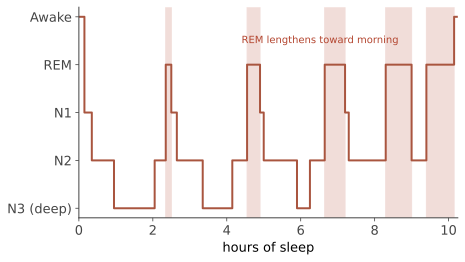

生物 III · 意识、睡眠与药物
意识是心理学里"最熟悉又最难说清"的对象。本页三段：意识的科学化（能测量的部分）、睡眠（证据最扎实、对你最有用的一段）、以及精神活性药物的作用逻辑。
1. 意识的科学化
能操作的定义：对内外刺激的觉知 + 报告能力。研究策略是找意识的神经相关物（NCC）——用双眼竞争、掩蔽、无注意视盲等范式，让刺激不变而意识内容变化，看脑活动差异。
两大理论（当代主战场）：全局工作空间理论（GWT，Baars/Dehaene：意识 = 信息被广播到全脑工作空间，"点燃"前额-顶叶网络）vs 整合信息理论（IIT，Tononi：意识 = 系统整合信息的量 \(\Phi\)）。【未定】 2023–2025 年的 Cogitate 对抗性协作（两派事先约定预测、由第三方执行实验）结果对两个理论都有不利之处——这是心理学方法论改革的漂亮示范：让理论提前押注，而不是事后解释（🔗 与你预测层的 forward-only 纪律同构）。
无意识加工是真实的【稳】：内隐记忆、盲视（V1 损伤者能"猜"对看不见的刺激）、启动效应的知觉版本（注意与社会行为版启动的复现困难是另一回事，第 03 页）。但"潜意识广告能操纵购买"是骗局【倒】——1957 年 Vicary 的爆米花实验后来由他本人承认是编造的。
2. 睡眠：本页最有实用价值的部分
结构：约 90 分钟一个周期，N1→N2→N3（慢波深睡）→REM（快速眼动，梦境集中、肌肉麻痹）。夜间前半程慢波多、后半程 REM 多——所以少睡两小时，砍掉的主要是 REM。

功能【稳】：记忆巩固（慢波负责陈述性、REM 与程序性/情绪记忆相关，第 09 页）、代谢清理（脑脊液的类淋巴清除在睡眠中增强）、情绪调节、免疫。
睡眠剥夺的后果【稳】：注意与工作记忆下降、情绪反应放大（杏仁核反应增强而前额调控减弱）、事故率上升。"我只需要 5 小时" 多数是主观感觉适应而客观表现继续下降——真正的短睡眠基因型（如 DEC2 突变）极其罕见。
失眠的一线治疗是 CBT-I 而非安眠药【稳】——刺激控制、睡眠限制、认知重构；长期疗效优于药物且无依赖问题。（🔗 第 17 页。）实用要点：固定起床时间比固定入睡时间更有效；床只用于睡觉；20 分钟睡不着就起床；咖啡因半衰期约 5–6 小时（下午的咖啡确实会影响深睡）。
梦：【摇/倒】弗洛伊德的"梦是愿望的伪装满足"缺乏实证支持；当代主流是激活-合成（脑干随机激活 + 皮层编故事）与记忆巩固/情绪处理假说的组合。梦的内容分析没有稳定的"符号词典"——市面上的解梦书没有科学地位。
3. 精神活性药物
共同机制：模拟递质、增强释放、阻断再摄取或阻断受体（第 04 页）。成瘾的核心通路是中脑边缘多巴胺系统的奖赏预测误差被劫持——药物提供的"比预期好"的信号远超自然奖赏，且耐受（同剂量效果下降）与戒断（相反方向的稳态反弹）共同维持使用。
| 类别 | 例 | 主要作用 |
|---|---|---|
| 抑制剂 | 酒精、苯二氮䓬、阿片类 | 增强 GABA / 激活阿片受体；抑制中枢 |
| 兴奋剂 | 咖啡因、尼古丁、可卡因、苯丙胺 | 增加 DA/NE 可用性 |
| 致幻剂 | LSD、裸盖菇素、氯胺酮 | 5-HT2A 激动 / NMDA 拮抗 |
【摇→值得关注】致幻剂辅助治疗：氯胺酮/艾氯胺酮已获批用于难治性抑郁；裸盖菇素与 MDMA 的临床试验显示中到大效应但盲法极难维持（受试者显然知道自己吃了什么，这会系统性放大安慰剂成分），且 2024 年 MDMA 治疗 PTSD 的申请曾遭美国监管机构否决——这是"效应可能真实但证据链尚未闭合"的教科书案例，读相关报道请对照第 03 页的五问。
成瘾的现代理解：不是意志力缺陷，而是慢性脑疾病 + 环境与社会因素（越战老兵回国后海洛因使用率骤降的著名自然实验，说明情境的力量远大于"物质本身必然成瘾"的叙事）。
4. 反直觉清单
- 催眠是真实现象但不是"被控制"【摇】：可测量的暗示感受性个体差异真实存在，可用于疼痛管理；但"催眠恢复被遗忘的记忆"是虚假记忆的高发场景【倒】（第 09 页）；
- 醉酒断片不是"记不起来"而是"根本没存进去"（酒精阻断海马编码）；
- 补觉有用但不完全等价——睡眠债的认知损害不能靠周末一次补回；
- 【倒】睡眠学习（睡觉时放录音背单词）：陈述性内容的睡眠学习没有证据；睡眠中的记忆巩固（已学内容）才是真的。
线二收官。下一线进入认知：从"感觉器官收到什么"到"心智看到什么"——两者的差距，就是知觉心理学的全部内容。